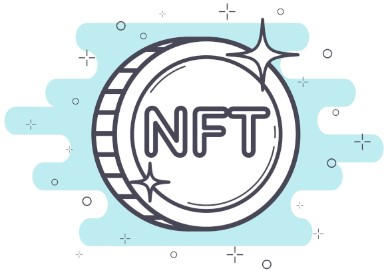
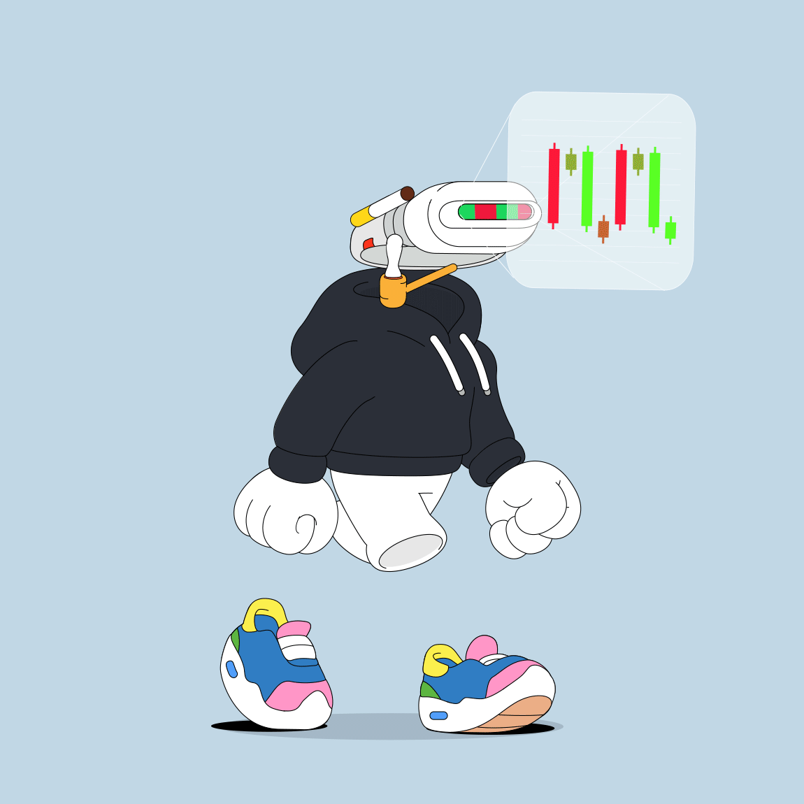

- 8. Les NFT -
8.1 Introduction
Qu’est ce qu’un NFT (Non Fongible Token) ? Un token, si on a lu les cours précédent, on sait : c’est une unité, une pièce, un jeton. Et non fongible : qui n’est pas fongible, ce qui veut dire non interchangeable.
Donc un NFT c’est un jeton non interchangeable. Prenons un exemple pour imager :
Si vous avez 2€ dans votre portefeuille, que je vous les emprunte et que je vous rend une autre pièce de 2€ le lendemain, ça ne change rien pour vous car l’Euro est une monnaie fongible, chacune de ses pièces de 2€ à la même valeur. De même pour le Bitcoin, chaque Bitcoins à la même valeur que ses 19,4 millions de cousins.
Les NFT quant à eux sont comme les crypto-monnaies des tokens émis sur la blockchain, sauf que ces derniers sont indivisible et unique, ils ont chacun une adresse de contact et un ID de jeton qui leurs est propre et permet de les identifier.
Cette caractéristique donne au NFT un très grand nombre d'utilisations possibles.
8.2 L'utilité des NFT
Les NFT sont donc tout indiqué pour être des certificats permettant d'assurer l’authenticité et de l’unicité d’un objet réel ou numérique, et de le suivre dans le temps.
C’est ainsi qu’ils ont commencé à être associés à des objets tels que des montres, des bijoux, des œuvres d’art et bon nombres d’autres projets. Permettant au passage de lutter contre le recel et la contrefaçon.
Et bien entendu, ce pour quoi tout le monde les connaît, l'authentification d’objet numérique à commencer par les collections d'œuvre d’art numérique qui ont fait couler beaucoup d'encre. La plus connue de toutes étant Bored Ape Yacht Club (ci-dessus), composé de 10.000 pièces valant chacune plusieurs dizaine voir centaine de millier de dollars.
Les NFT sont également utilisés dans certains jeux vidéos, le plus connu etant sans doute Sorare, un jeu de football où chacun peut collectionner et faire jouer des NFT à l’effigie de vrais joueurs. NFT sous forme de cartes qu’on peut s’échanger ou revendre.
On peut aussi parler du metaverse ou les nft sont partout, sous forme de parcelles de terrains, de constructions, de visuels pour son avatar numérique, et j’en passe. De grandes marques textile ont d'ailleurs déjà en projet de désigner et mettre en vente des collections 100% numérique pour ce marché.
Dans le monde du cinéma, des scènes ou des illustrations sont vendues sous forme de NFT pour financer la production d’un film ou d’une série, dans la musique ou même en politique : en Corée du Sud ou aux États-Unis, des candidats ont émis des NFT associés à des photos ou une couverture de livre pour financer leur campagne.
Impossible de citer tous les exemples tellement il y en a, et nombres de nouvelles utilisations continuent d’arriver avec le temps montrant l'utilité de cette technologie et sur la place qu’elle aura dans le futur. On pourrait facilement imaginer des billets de train, d’avion ou de concert prendre la forme de nft.
Le site spécialisé Nunfungible.com estime qu’en 2021, il s’est échangé pour plus de 17 milliards de dollars de NFT.
8.3 Les SBT
Les SBT (SoulBound Token) sont des nft qui une fois émis dans le wallet de quelqu’un ne peuvent pas être échangés et n’ont aucune valeur monétaire.
Leurs applications possibles sont là aussi innombrables : papier d'identité, dossier scolaire, diplôme, dossier médical, casier judiciaire, CV, etc…
Il pourrait servir de clé unique, non copiable et infalsifiable pour s'identifier et avoir accès à son compte en banque, sa fiche d’impôt, et tout ce qui nécessite une identification.
Cette technologie est encore en développement mais pourrait résoudre beaucoup de problèmes comme l’usurpation d'identité, la fraude, le vol, la perte de document important.
Elle pourrait apporter beaucoup plus de sécurité au quotidien, mais mise en place de la mauvaise manière ou utilisée par les gouvernements comme outil de contrôle des populations, elle pourrait s’avérer très dangereuse et porter un grand coup sur nos libertés.
8.4 Acheter, vendre, transférer des NFT ?
Invisible Friends #1626
Pour acheter et vendre des nft il existe plusieurs marketplace, la plus connue actuellement étant opensea.io mais on peut aussi citer rarible.com, elles fonctionnent toutes deux de la même façon. Mais la première à une interface en Français et pas la deuxième. Elles sont toutes deux décentralisées. Vous pouvez les consulter en vous rendant sur leur site mais pour pouvoir les utiliser vous devrez connecter votre wallet.
Attention : ne connectez votre wallet qu’à des plateformes connues et reconnues ! N’acceptez jamais une connexion de ce dernier avec un site bizarre que vous ne connaissez pas.
Les nft listés à la vente le seront sur toutes les plateformes et au même prix, vous pouvez acheter sur une ou sur l’autre le même NFT car celui ci c’est de la blockchain que vous le recevez, pas de la plateforme. Celle-ci ne sert qu’à offrir une “interface” pour permettre aux acheteurs et aux vendeurs de se mettre en relation facilement. Cependant sachez que toutes les plateformes ne liste pas toutes les collections NFT et aussi que toutes les blockchains ne sont pas disponibles sur toutes les places de marché.
Attention : de petits malins créent des collections en copiant des collections à succès. L'image sera la même mais pas l’adresse du contact. Évidemment ces copies ne valent rien et vous ne pourrez jamais les revendre. Méfiez-vous donc des prix bizarrement bas. Et quand vous êtes nouveau et inexpérimenté, renseignez vous en passant par les sites officiels de la collection qui vous intéresse, ils donnent systématiquement des liens vers leurs collections sur les places de marché.
Sinon pour ce qui est de l’acte d’acheter il se fait très facilement, ce n’est pas plus compliqué que sur amazon, vous cliquez sur le nft qui vous intéresse et vous cliquez sur acheter. La seule différence c’est que plutôt que de rentrer votre numéro de CB ou votre compte paypal, vous devrez signer la transaction avec votre wallet (celui-ci s’ouvrira tout seul au moment de l’achat). Une fois acheté, le NFT se trouvera dans votre wallet.
Pour vendre ce n’est pas non plus très compliqué, cliquez sur votre logo en haut à droite, allez dans votre profil, vous y verrez tous les NFT détenu dans votre wallet, cliquez sur celui désiré puis sur “Mise en vente”. Déterminez un prix et signez la mise en vente avec votre wallet.
Pour ce qui de transférer un nft “gratuitement” ou lors d’un accord à l'amiable avec un amis par exemple, la procédure est la même que pour envoyer de la crypto-monnaie. Allez dans l’onglet NFT de votre wallet, maintenant la plupart en ont, cliquez sur le nft en question puis sur “send” ou “envoyer” suivant la langue. Vous n’avez plus qu’à indiquer l’adresse de destination (bien évidemment comme pour les crypto, si le nft est sur la blockchain ethereum, ne l’envoyez que sur une adresse ethereum!), payez les frais de transaction et c’est fini.